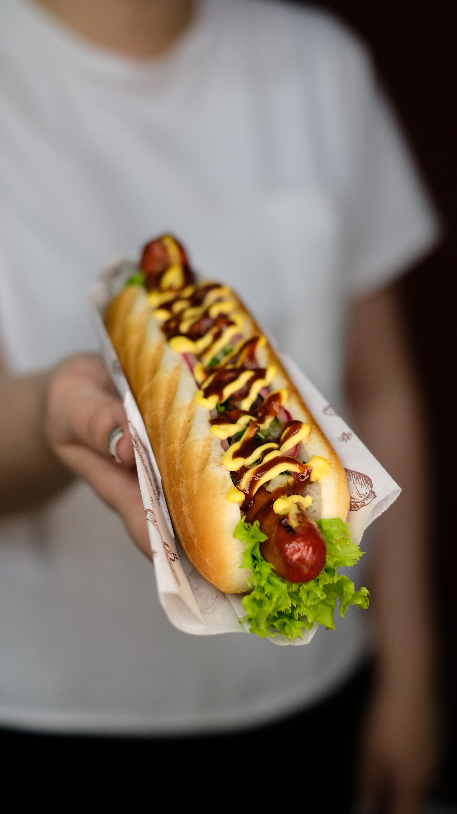

Hotdogs:
Hotdogs, the quintessential American comfort food. These cylindrical wonders are a symbol of backyard barbecues, baseball games, and summer picnics. Picture it: a juicy, perfectly grilled sausage nestled within a soft, slightly toasted bun. The first bite unleashes an explosion of flavors as the savory meat mingles with tangy mustard, ketchup, and a sprinkle of diced onions. The contrasting textures of the crispy bun and the succulent sausage create a satisfying harmony. From the classic beef frankfurter to the smoky bratwurst or the spicy chorizo, there's a hotdog for every taste preference. Whether enjoyed with traditional toppings or customized with creative condiments, hotdogs continue to hold a special place in our hearts (and stomachs) as an American culinary icon. Bite into a hotdog, and you'll experience a nostalgic delight that transcends generations.
Ingredients
- Sausages
- Hotdog buns
- Mustard
- Ketchup
- Relish
- Onions
- Pickles
- Cheese
- Chili